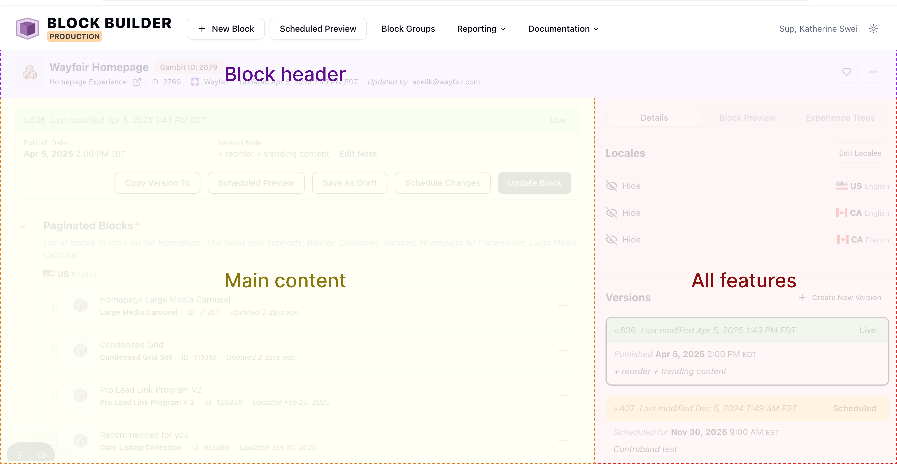
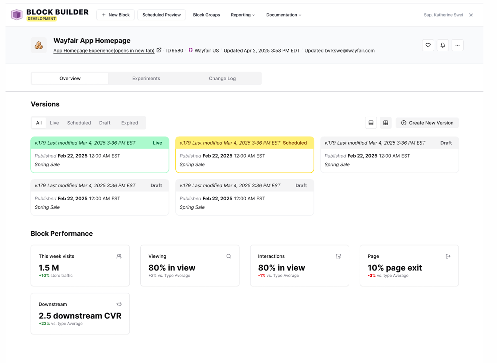
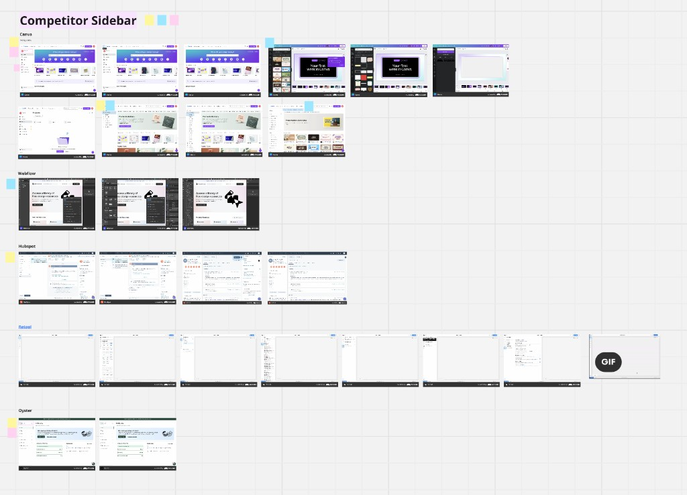
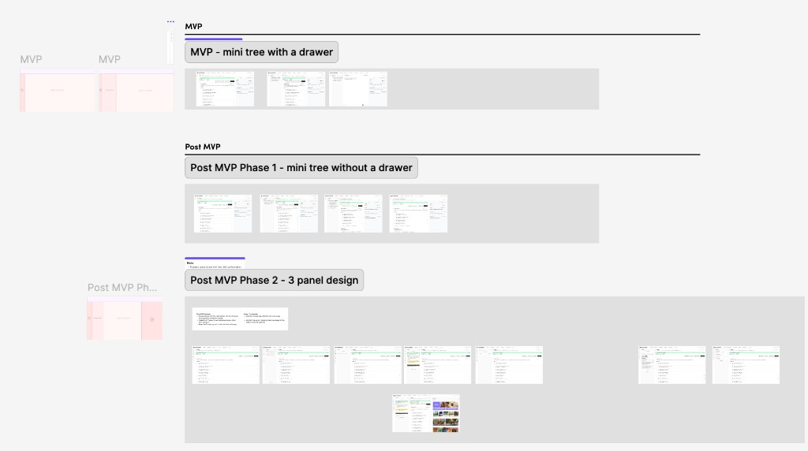
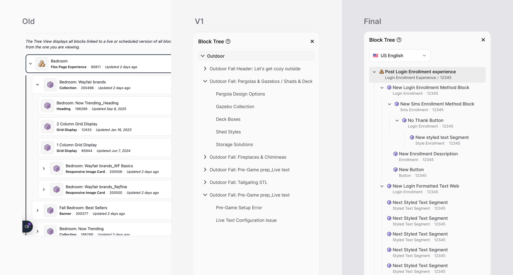
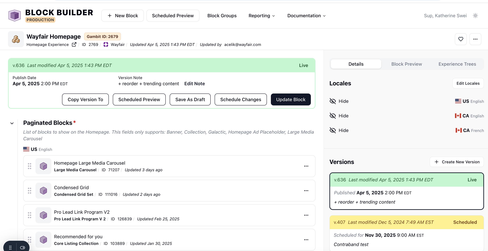
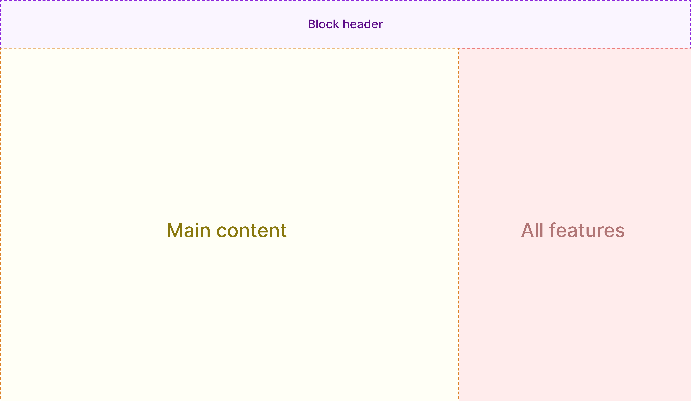
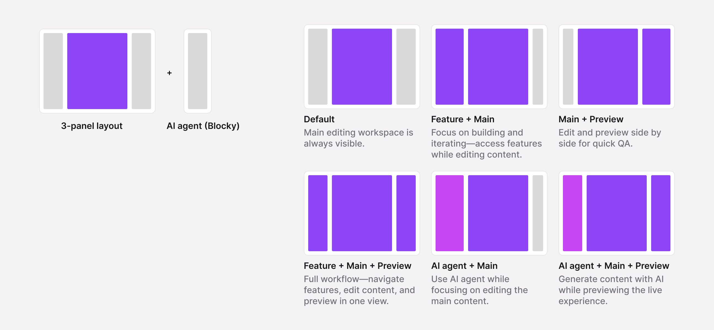
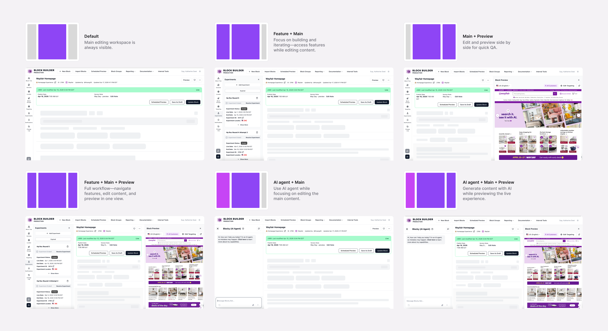
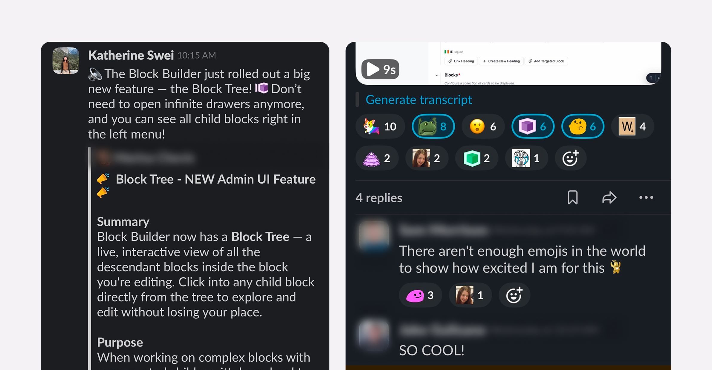

Redesigning Block Builder's workspace for a growing platform
A new workspace structure that helps 50+ teams find features, navigate complex page hierarchies, and work with less friction.
Problems
As Block Builder grew to support 50+ teams and increasingly complex workflows, the workspace struggled to keep up. Features became harder to find, and deeply nested pages became harder to navigate.
My role
- Led the redesign end-to-end
- Drove the workspace structure & interaction model
- Prototyped in code with Cursor and aligned with PM and engineering
- Defined the MVP & Post-MVP scope
Solution
A flexible workspace of features, main work, and preview that makes them easy to find and deep hierarchies fast to navigate.
Impact
- Shipped across MVP and Post-MVP
- Made features easier to find and deep hierarchies faster to navigate
- Increased user satisfaction by 8.6% within two months
Overview
What is Block Builder & who uses it?
Block Builder is Wayfair's internal content platform, used by 50+ teams to build and manage experiences across Wayfair.com. It supports everything from content creation and page configuration to targeting, experimentation, and scheduling.
The platform serves a wide range of users, from PMs and marketers to engineers, designers, merchandisers, and analysts, each with different workflows and needs. As more features were added, they all accumulated within the same workspace.

The problem
The platform grew, but the workspace didn't
As Block Builder expanded to support different teams and roles, it also accumulated more features. But everyone kept working in essentially the same workspace, and its structure never evolved with the platform. Two problems kept surfacing:

Problem A
Finding features was harder than it should be
Targeting, experimentation, block groups, and other features all lived in one long list. Different roles needed different features to complete their jobs, but everyone had to navigate the same list to find what they needed.
Users had to scroll through the list to find the right tool.
Problem B
Users had to go through too many layers to reach what they needed
Blocks could be nested many levels deep. To reach a block buried ten levels down, users had to click through nine drawers, then close them one by one to get back.
Why it matters to the business 💸 and the platform 🖥️ ?
Block Builder is an internal platform, but it directly powers the customer experiences on Wayfair.com. More than 50 teams rely on it to build, configure, target, experiment, and publish content, often for time-sensitive promotions and seasonal campaigns. When finding features and navigating pages is difficult, the impact goes beyond individual users. Teams spend more time completing everyday tasks, while every new feature adds more complexity to a platform that needs to scale with their growing needs.
Finding the right direction
The first idea wasn't the answer
I started by exploring an "overview" concept, similar to the relationship between a Google Drive folder and a Google Doc. The idea was to give users a higher-level view of a page, separate page-level information from individual blocks, and let them drill into blocks when needed.


But as I explored the concept and shared it with stakeholders, I got pushback from my PM, which uncovered two important limitations.
Limitation 1
It improved access to features, but it didn't fully solve the navigation problem.
Users could see the page at a higher level, but deeply nested blocks could still require multiple steps to reach.
Limitation 2
It introduced more complexity to the platform.
Block Builder supports thousands of pages, so creating an overview layer for every page would add thousands of additional views and likely require backend and data changes. For a platform where stability was critical, that was a significant trade-off.
What I learned
The feedback made me realize that I shouldn't solve a navigation problem by adding another layer to the product. For a platform this large and complex, the better opportunity was to rethink how the existing workspace was structured, while keeping the underlying system stable.
That changed my approach. I stepped back and explored how other complex products organize dense workflows, looking for ways to reduce travel distance, keep users oriented, and make the workspace scalable as features continued to grow.
How might we restructure the workspace so users can easily access the features they need, navigate complex page structures, and keep working, without adding more complexity to the platform?
How I shaped the direction
Designing within the platform's technical constraints
Block Builder powers the live site, so large backend changes carried real production and business risk. Instead of rebuilding the foundation, I focused on what we could improve through the UI and frontend while preserving the existing architecture.
I worked closely with PM, EM, and engineering from the start, using competitive research and prototypes to explore what was feasible. This helped us narrow the direction into a phased MVP and Post-MVP plan that addressed the biggest usability issues first without adding unnecessary platform risk.

Competitive research
Studied complex products like Contentful, Sanity, and Figma to see how they organize features and dense workflows.
Prototypes to align
Made abstract ideas tangible and used them to validate directions with PM, EM, and engineering.

MVP + Post-MVP
Scoped a phased path around technical constraints instead of one risky big-bang redesign.
Design iteration & Eng collab
Reimagining what we already had
As I explored ways to solve the navigation problem without adding another layer to the platform, I realized we already had a piece of the solution: Block Tree. Block Tree was originally built to visualize nested block relationships, but it already had the data needed to move through the page structure. I explored how we could give this existing feature a new role instead of introducing another system.
I called the concept a "mini tree" and used prototypes to make the idea tangible. Framing it as an evolution of something we already had made it easier for PM and engineering to evaluate the direction and understand what could be achieved with the existing architecture.

The solution
A workspace built around how people work
Instead of treating navigation as a separate layer, I restructured the workspace into three parts that work together, so features, editing, and preview each have a clear place instead of competing for the same space.


Left
Features
A dedicated area for platform features, grouped so users see and reach the tools relevant to their work instead of one long list.
Center
Main work
The primary editing space, the task users are always on, kept visible and stable.
Right
Preview
A persistent place to see and validate the customer-facing result while working.
Beyond the core layout
Flexible panel architecture (3 panels + AI agent)
As a complex platform, the design needed to support multiple panel configurations, not just a fixed 3-panel layout. In addition to navigation, editing, and preview, we also introduced an AI agent (Blocky) as an optional panel. Since we envision AI-assisted workflows as a core part of the platform's future, it was important to ensure users can always access it.


Solution A
Grouped features around how users work
I moved features into a persistent navigation panel and grouped them by workflow, so users could quickly access the tools relevant to their jobs instead of scanning one long list.
Solution B
Kept users oriented while navigating deep hierarchies
I replaced nested drawers with a persistent workspace structure that keeps the page, its hierarchy, and the active block visible, reducing the steps and travel distance needed to move between levels.
Shipped
Shipped with an 8.6% increase in user satisfaction
Shipped across MVP and Post-MVP, the redesign improved navigation, enabled side-by-side editing and preview, and created a more flexible workspace for future features. Within two months, a post-launch survey showed an 8.6% increase in user satisfaction compared with the previous experience.

Reflections
Building in the unknown
This project had a lot of ambiguity. I identified the problem and led it end-to-end without a clear roadmap. Through user insights, research, and close collaboration with stakeholders, I defined the MVP and Post-MVP approach, aligned priorities, and drove it to launch.
Designing within constraints
At the same time, I had to design within tight constraints on a complex, high-risk platform. I worked closely with engineering to find feasible solutions, reusing existing systems where possible, and balanced different user needs so it stayed easy for new users while still powerful for advanced ones.